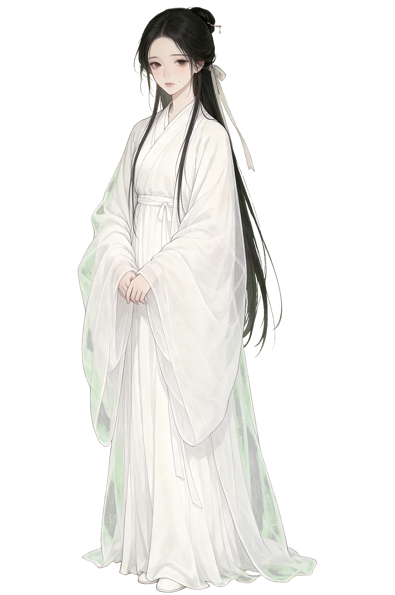
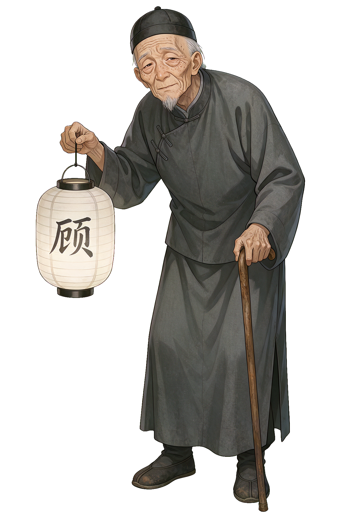
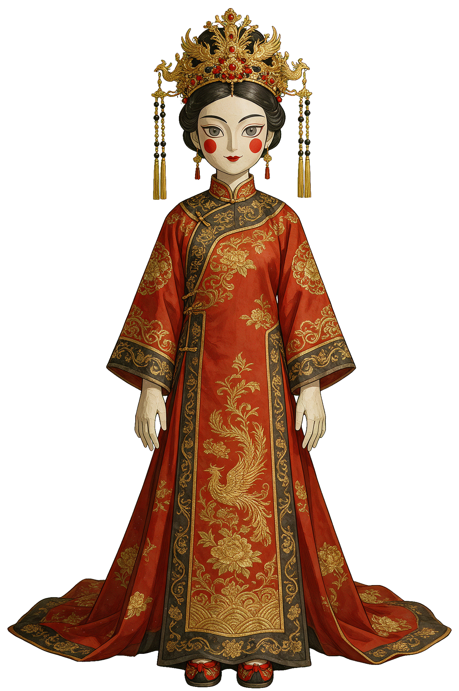

一盏青灯，照见故人
光绪二十三年 · 秋
「老夫人……候了您好些日子了。」
我离开槐荫村，已经整整七年了。七年前我背着画箱去府城投师，祖母站在村口的老槐树下送我。她什么也没说，只往我怀里塞了一包桂花糖。
那是我最后一次见她。
半月前接到家书，说祖母病故。信是福伯代笔的，字迹抖得厉害。回到老宅，灵堂的白烛烧得正旺，可守灵的人里，有一个我从未见过的女子——阿纨。她冲我笑，笑容像是从旧年画上揭下来的。
夜里的宅子很不安静。回廊尽头有脚步声，纸窗上映着不属于任何人的影子，而书房那面蒙尘的铜镜里……照出的不是我。
入宅者 · 守宅者 · 非人者

守灵夜里出现在灵堂的年轻女子，自称是受了老夫人恩情前来还愿。她认得宅子里每一条回廊，却没人说得清她从何而来。烛火映着她的侧脸时，总让人觉得似曾相识。

伺候了老夫人一辈子的老仆，代笔写下了那封报丧的家书。他提灯的手总在发抖，浑浊的眼睛里像藏着许多没说完的话——关于这座宅子，也关于祖母的亡故。

纸屋里立着的东西。惨白的脸，鲜红的唇，是丧事上烧给亡人的纸扎。可福伯说，老夫人走后，它的位置……每天都会变。不要盯着它的眼睛看太久。
点击可放大查看
一段约一小时的回乡路
四十四段环环相扣的剧情，从村口老槐到灵堂白烛，步步深入老宅的秘密。
青灯、超度、烈火——你的每一次抉择，都在改写这场丧事的终局。
角色全程配音，配合原创配乐与音效，烛影摇红之间，毛骨悚然。
收集剧情 CG、音乐与语音，解锁老宅里每一件旧物背后的故事。